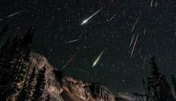
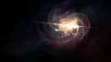
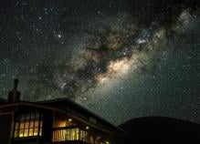
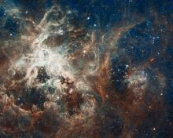

 At the mid April, skywatchers located in the Northern Hemisphere will have a chance to get a view of the Lyrid meteor shower, the dusty trail of a comet with a centuries-long orbit around the sun. Skywatchers will have a chance to see Lyrid meteors streak across the sky between April 16 and April 25. The best day to see Lyrid meteors will be Monday, April 22.
As with most meteor showers, the peak viewing time will be before dawn. The radiant — the point from which the meteors appear to originate — will be high in the evening sky in the constellation Lyra to the northeast of Vega,one of the brightest stars visible in the night sky this time of year. Don't look directly toward the radiant, though, because you might miss the meteors with the longest tails. Make the Lyrid Meteor shower viewing more exciting and name a star for yourself or as a gift to not only spot the meteor shower but also a star named after you.
In this world, there are many mysteries, and most of them we won't be able to explain. For example, black holes, the creation of life on Earth, the explosion of stars or enigma of the perfect gift.
The twinkling of stars is a truth so fundamentally accepted that children are taught about it in the form of rhyme from their earliest years. It is a distinctly noticeable characteristic that gives stars such a singular beauty as a part of the natural universe.

To the untrained and naked eye, the night’s sky might seem like a vast expanse of black dotted only with twinkling white. While there is no doubt that the universe would be no less fascinating and beautiful if this were the case, it takes only a carefully considered look to reveal so much more.
 Humanity has been fascinated by the night’s sky for as long as mankind has walked the surface of this planet. The view of a clear night’s sky, speckled with twinkling diamonds, has offered inspiration to poets and hinted at the secrets of the universe to astronomers for generation after generation after generation.
Lifetimes have been spent studying the sky and the stars and there are still lightyears of stars left to explore.
 Most of us love astronomy and everything that it involves as it is something mysterious that is far from being fully explored, and most likely will would not be explored anytime soon . The universe generates amazement when exploring space and everything in it. There is great beauty in space. From where we can see with the naked eye to the farthest galaxies, it is irresistible. We have gained interest in exploring the mysteries of outer space by physically travelling outside the earth’s atmosphere or by sending unmanned probes. Throughout the years nuumerous amazing pictures have been collected and they are breathtaking images, revealing the wonders of space. Below, we have collected the most astounding images taken of space.
The universe is a fascinating and wondrous place. Loaded with unknown phenomena and mysterious things that keep us wondering. Something that has confused the inhabitants of the earth for many years are the twinkling lights that appear in the sky each night. Little sparks of light twinkling in the dark night sky.
A mother is the one who fills your heart in the first place. But behind all your stories is always your mother's story, because hers is where yours begin. Spoil her this Mother’s day with a star named after her as she shines bright in your everyday lives. Mom’s are making this world better everyday. In a child's eyes, a mother is a goddess. She can be glorious or terrible, benevolent or filled with wrath, but she commands love either way. I am convinced that this is the greatest power in the universe. Compassion is like mother giving love to her children. Mother’s ways are higher than others, even when everyone rejects, mother accepts with her arms open and wide. Life doesn't come with a manual, it comes with a mother. From your first steps to learning to eat with a spoon or even going to the dentist, Mom’s love and support is what gets us through everything in life. Mom’s are like superheroes.